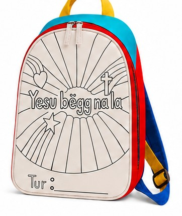
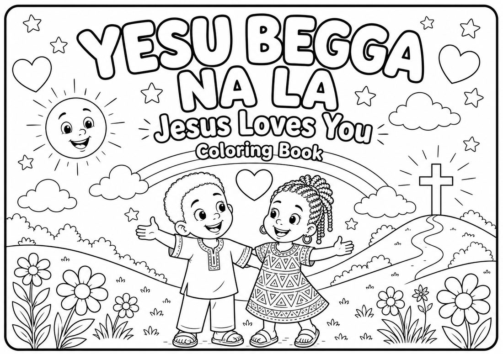
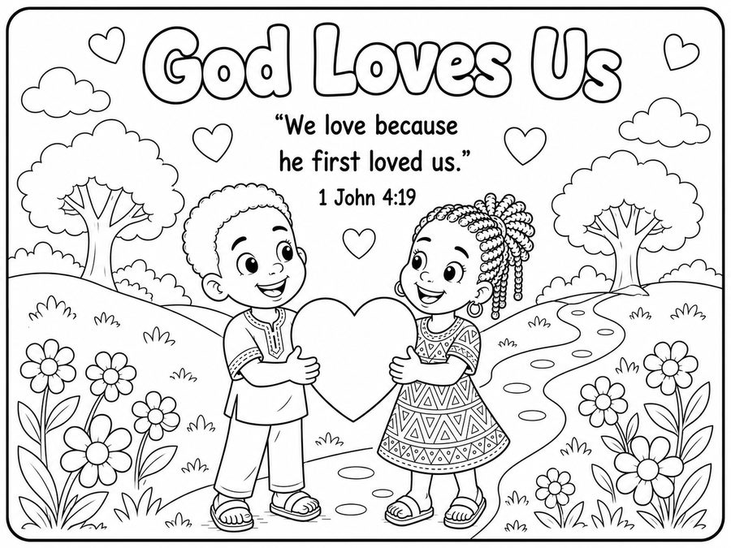
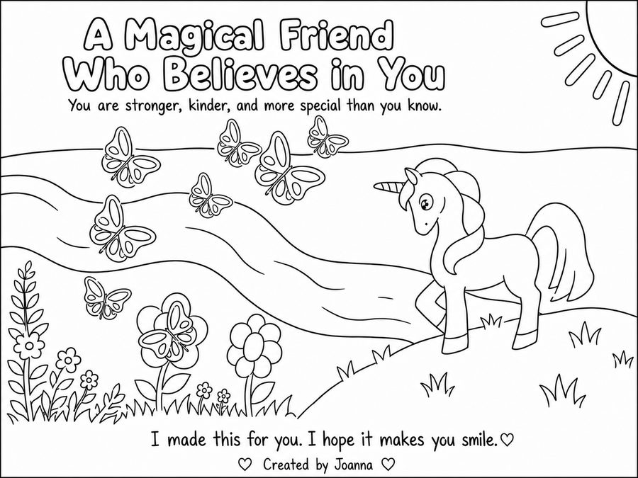
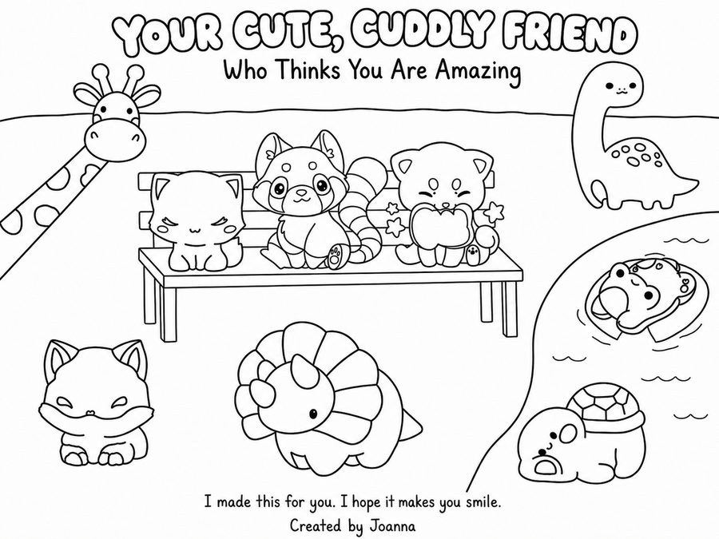
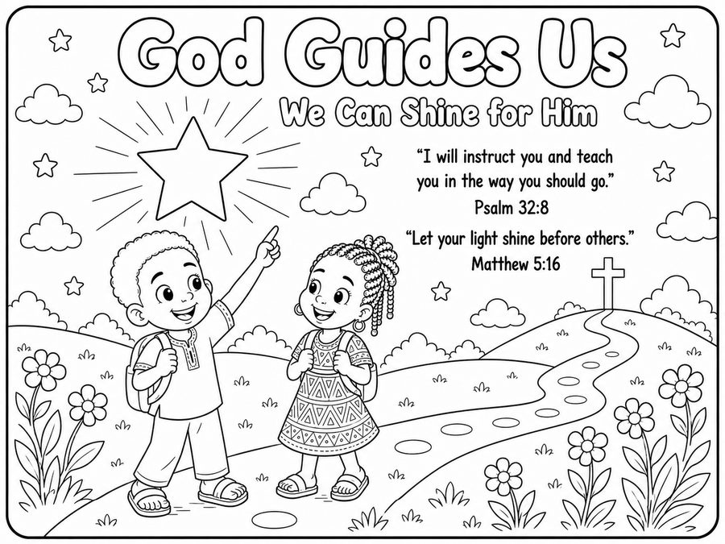

Home / Our Project
2026–2027 · Supporting ACO's Hope and Care Program during the 2027 Annual Medical Mission Outreach in Senegal.
Our founding project prepares complete, child-centered backpack sets that will be packed at the ACO base in Senegal and shared with children through Hope and Care activities during the mission outreach.
We hope to prepare up to 1,000 complete sets, with a minimum first-year goal of at least 100 sets. If we reach 1,000, we plan to serve about 10 villages with roughly 100 sets each — final numbers depend on funds raised and guidance from ACO and local field leaders.

These four items are the main project. They're designed to belong together as one thoughtful gift.
Optional extras — school supplies, handmade cards, bookmarks, and more — may be added separately, as long as they never delay the four core items.
Ask trusted partners about children, needs, and what would truly be useful.
Choose a theme, design the materials, plan costs, and make samples.
Raise approved support, order or make items, pack carefully, and confirm logistics.
Work through trusted partners to distribute items with care and respect.
Thank supporters, collect feedback, reflect together, and improve next time.
Each coloring book has two sections, designed to help a child feel seen, loved, and connected.
Section One — Backpack Theme & Bible Truths. Coloring pages that expand on the backpack's symbols — suns, hearts, stars, crosses — with simple, encouraging truths.
Section Two — Children's Hearts to Hearts. Pages created by our young designers to share joy and encouragement, child to child: “I made this for you. I hope it brings you joy.”





The four core items are shipped to the ACO base before the 2027 outreach. Volunteers then sort, pack complete sets, and distribute them through ACO's Hope and Care activities.
All project donations are received and managed through ACO's approved financial channels. Students help with planning, design, and communication — but never personally collect, hold, or manage funds. Every major decision is reviewed and approved by our Adult Advisor team.
Every complete backpack set is a gift a child can open, color, and keep — a reminder that they are loved.
♥ Support the Project